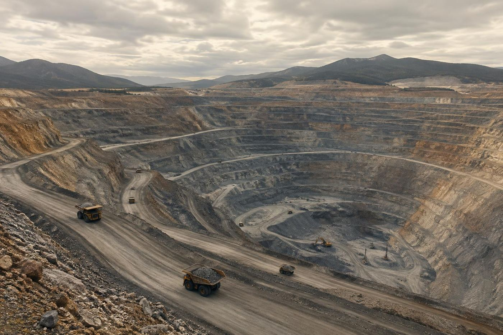

ИИ оправдан
Неструктурированные данные, изменчивость образов, масштаб, прогнозная ценность.
Детекция плёночных загрязнений по данным БПЛА: точность 91 % там, где раньше акваторию патрулировали с судна.

КОР.САЙТ.01 · ГЛАВНАЯ
Промышленный ИИ · Диагностика до внедрения
Каждый процесс получает решение: ИИ, Гибрид, Без ИИ или Отложить – с границами применимости и отдельным статусом допуска к пилоту. Сначала – диагностика и подписанное заключение, потом – работа.
Решение подписывает человек · особые мнения экспертов сохраняются
Метод · четыре вердикта · Лист 1 из 6
ИИ оправдан
Неструктурированные данные, изменчивость образов, масштаб, прогнозная ценность.
Детекция плёночных загрязнений по данным БПЛА: точность 91 % там, где раньше акваторию патрулировали с судна.
Гибрид
ИИ – в части подзадач; правила и человек – на критических решениях.
Документооборот девелопера: LLM в 3 подзадачах из 8 – только там, где точность выше 95 %.
Без ИИ
Стабильные правила, низкий объём, нетерпимость к ошибке, нехватка данных.
Предупреждение о подходе судна к ледовой зоне – детерминированная логика: геометрия маршрута и пороги времени.
Отложить
Идея разумна, но рано: мало данных, не готовы процессы или нет владельца.
Сначала навести порядок в данных и регламентах, вернуться к ИИ, когда появится на чём учиться и кому отвечать.
Council 7+1 · Лист 2 из 6
Ведущий агент собирает контекст и раздаёт брифы семи экспертным ИИ-ролям. Выводы по праву, финансам и отрасли проверяют приглашённые эксперты-люди, заключение подписывает Сергей Зубков.
Уточняет контекст, пока данных не станет достаточно, ставит задачи экспертам, сводит выводы и особые мнения.
Где реальные потери и узкие места
Чем решать: ИИ, правила, интеграция
Практика и ограничения вашей сферы
+ эксперт-человек
Окупаемость и полная стоимость владения
+ эксперт-человек
Договоры, данные, ответственность
+ эксперт-человек
152-ФЗ, отраслевые требования, закрытые контуры
Безопасность моделей (MLSecOps): атаки, утечки, границы автономии
Главный конструктор бюро проверяет выводы и подписывает заключение.
Кейсы · Лист 3 из 6

Платформа безопасности плавания для нефтегазовых групп и национального морского перевозчика: ледовая обстановка, маршруты, границы автономии.
Разбор кейса →
Метео-бюллетени и контроль страхового покрытия для страховщиков; детекция аномалий флота для судовладельцев. Собственная разработка и внедрение сервиса в семи странах.
Разбор кейса →
От сплошного визуального патрулирования к точечному мониторингу с БПЛА: естественные и антропогенные нефтяные разливы.
Разбор кейса →
Агент распределяет и приоритизирует работы филиалов в закрытом госконтуре; поверх него – стандарт управления.
Разбор кейса →Портфель инициатив девелопера топ-3 Москвы: где ИИ оправдан, а где достаточно обычных правил.
Разбор кейса →
Единое геоинформационное пространство Москвы: от разрозненных ведомственных данных к управляемой системе.
Разбор кейса →
ML-детекция сорных и карантинных растений для государственного надзора: от снимка до готового кейса инспектора.
Разбор кейса →
Заключение по процессам буровых установок: где ИИ оправдан, а где только детерминированная автоматизация.
Разбор кейса →
Программа внедрения ИИ в стоматологический микроскоп: три волны функций до ИИ-ассистента эндодонтиста.
Разбор кейса →Отрасли · Лист 4 из 6

Углеводороды и руды. Безопасность и логистика в суровых средах: шельф, лёд, удалённость.
Межведомственная интеграция и городские данные: 60+ ведомств, закрытые контуры, 44-ФЗ / 223-ФЗ.
Весь жизненный цикл объекта: изыскания, проектирование, строительство, эксплуатация, продажи.
Флот и риски: метеообеспечение, контроль страхового покрытия, экономика редких, но крупных событий.
Гео-ML мониторинг полей: от аэрофотосъёмки до результата для инспектора за 2 часа вместо 3 дней.
Медицинские изделия и диагностика: ИИ-функции, регистрация ПО как медизделия, ЭПР, клиническая валидация.
Форматы · Лист 5 из 6
Шаг 1
Короткая анкета и первичная карта: где ИИ стоит рассмотреть, а где точно нет. Онлайн через Council 7+1.
бесплатно · скоро
Шаг 2
Фикс-скоуп: аудит процессов, матрица решений, бизнес-кейс, дорожная карта. 2–4 недели.
от 500 000 руб. за этап · возможна доля от эффекта (revenue share)
Шаг 3
Внешний директор по ИИ на неполную занятость: стратегия, управление ИИ-функцией, контроль внедрений. От 3 месяцев.
от 200 000 руб./мес · день в неделю – от 350 000 руб./мес
Шаг 4
Команда бюро делает то, что прошло диагностику. Стандарт промышленной эксплуатации, развёртывание на площадке заказчика при необходимости.
оценка после диагностики
Шаг 4 · или
Внедряют ваши разработчики или подрядчики, бюро контролирует соответствие заключению и архитектуре, принимает этапы.
по объёму внедрения
Бюро · Лист 6 из 6
Сергей Зубков лично ведёт диагностику и архитектуру и подписывает каждое заключение. Анализ готовит Council 7+1, выводы по праву, финансам и отрасли проверяют приглашённые эксперты. Внедряет инженерная команда бюро или ваши подрядчики под нашим авторским надзором.

45 минут: ваш контекст и вопросы. На выходе – понимание, какой объём диагностики вам действительно необходим.